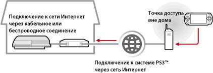
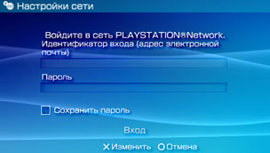

Сеть > Использование функции дистанционного воспроизведения (через Интернет)
Использование функции дистанционного воспроизведения (через Интернет)
Для использования данной функции может понадобиться обновление системного программного обеспечения систем PS3™ и PSP™.
С помощью системы PSP™ и беспроводной точки доступа (например, беспроводной точки доступа (беспроводной локальной сети), предоставляемой в рамках платных услуг) можно подключиться через сеть Интернет к установленной дома системе PS3™. Дистанционное воспроизведение вне дома возможно только в том случае, если система PS3™ работает в режиме ожидания соединения для дистанционного воспроизведения.

Подсказка
Способ подключения к беспроводной точке доступа (беспроводной локальной сети), предоставляемой в рамках платных услуг, а также стоимость подключения зависит от поставщика услуг. Подробную информацию можно получить у поставщика услуг.
Подготовка (1) (системы PS3™ и PSP™)
При первом использовании функции дистанционного воспроизведения необходимо выполнить процедуру регистрации (сопряжения) системы PSP™ и системы PS3™. Регистрация системы выполняется в меню  (Настройки) >
(Настройки) >  (Настройки дистанционного воспроизведения) > [Регистрация устройства].
(Настройки дистанционного воспроизведения) > [Регистрация устройства].
Подготовка (2) (системы PS3™ и PSP™)
Настройте систему PS3™ для перехода в режим ожидания. Выберите для параметра [Дистанционный запуск] значение [Включить] – и вы сможете запускать систему PS3™ с помощью системы PSP™.
1. |
Выполните следующие действия в системе PS3™:
|
|---|---|
2. |
Отключите систему PS3™. |
 (Пользователи).
(Пользователи). (Отключить систему), чтобы отключить систему и перевести ее в режим ожидания. Убедитесь, что индикатор питания светится красным.
(Отключить систему), чтобы отключить систему и перевести ее в режим ожидания. Убедитесь, что индикатор питания светится красным.Подсказка
Подробнее о настройке, описанной в п. 1, см. в разделе (Настройки) > (Настройки дистанционного воспроизведения) > [Дистанционный запуск] в данном Руководстве.
Подготовка (3) (система PSP™)
Для подключения системы PSP™ к точке доступа необходимо создать сетевое подключение. Для дистанционного воспроизведения через сеть Интернет можно воспользоваться, например, предоставляемой в рамках платных услуг "горячей точкой" (беспроводной точкой доступа). Подробнее см. руководство пользователя системы PSP™.
Использование функции дистанционного воспроизведения
1. |
В системе PSP™ выберите |
|---|---|
2. |
Выберите [Соединение через Интернет]. |
3. |
В списке соединений выберите соединение для точки доступа, которая используется для дистанционного воспроизведения. |
4. |
Введите идентификатор и пароль входа на сервер PlayStation®Network, соответствующие использовавшейся в системе PS3™ учетной записи.  После успешного подключения на экране системы PSP™ появится копия экрана системы PS3™. |
 (Сеть) >
(Сеть) >  (Дистанционное воспроизведение).
(Дистанционное воспроизведение).Выход из функции дистанционного воспроизведения
Нажмите кнопку PS (Кнопка HOME) на системе PSP™ и выберите [Выйти из дистанционного воспроизведения] > [Выйти и отключить систему PS3™].
Подсказка
Выберите [Выйти без отключения системы PS3™], если в системе PS3™ выполняется копирование файлов, фоновая загрузка или другие задачи.
Использование функции дистанционного воспроизведения через Интернет
При использовании некоторых сетевых устройств функция дистанционного воспроизведения через Интернет может оказаться недоступной. В этом случае воспользуйтесь приведенными ниже рекомендациями.
- Воспользуйтесь функцией [Тест - соединение с Интернетом] в разделе
 (Настройки сети) меню (Настройки), чтобы проверить возможность подключения системы PSP™ к сети Интернет и к серверу PlayStation®Network.
(Настройки сети) меню (Настройки), чтобы проверить возможность подключения системы PSP™ к сети Интернет и к серверу PlayStation®Network. - Если используемый маршрутизатор поддерживает UPnP, включите функцию UPnP маршрутизатора.
- Если используемый маршрутизатор не поддерживает UPnP, необходимо установить функцию переадресации портов маршрутизатора, чтобы обеспечить доступ к системе PS3™ из сети Интернет. Функцией дистанционного воспроизведения задействован порт с номером TCP:9293. Информацию об установке этой функции можно найти в руководстве по эксплуатации маршрутизатора.
- Переадресация портов – это функция перенаправления сигналов, поступающих в определенный порт (входной), на другой определенный порт (выходной). Эта операция также называется "отображением портов" или "преобразованием адресов".
- Подключение системы PS3™ к сети Интернет через два или большее количество маршрутизаторов может привести к ошибкам при обмене данными.
Подсказки
- Маршрутизатор – это устройство, позволяющее нескольким устройствам совместно использовать одну линию подключения к сети Интернет.
- Возможность передачи информации может быть ограничена средствами защиты маршрутизатора, а также поставщика услуг Интернет. См. документацию, поставляемую с сетевым устройством, и сведения, предоставляемые поставщиком услуг Интернет.